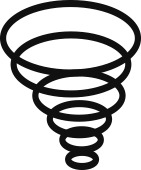

wetter für starke frauen

23 Grad sollen es heute in Steglitz-Zehlendorf werden, Gewitter sind möglich. Dabei hätte das örtliche Bezirksamt mehr Aufheiterung nötig, nachdem es seine Broschüre „Starke Frauen in Steglitz-Zehlendorf“ aus dem Verkehr ziehen musste. Zu den „starken Frauen“ zählte das Amt auch Richterin Hilde Benjamin, die zu DDR-Zeiten für Schauprozesse berüchtigt war. Im Vorwort der Broschüre schrieb SPD-Vizebürgermeister Michael Karnetzki: „Die Frauen aus unserem Bezirk haben gelernt, sich durchzusetzen.“ So kann man es auch sehen.